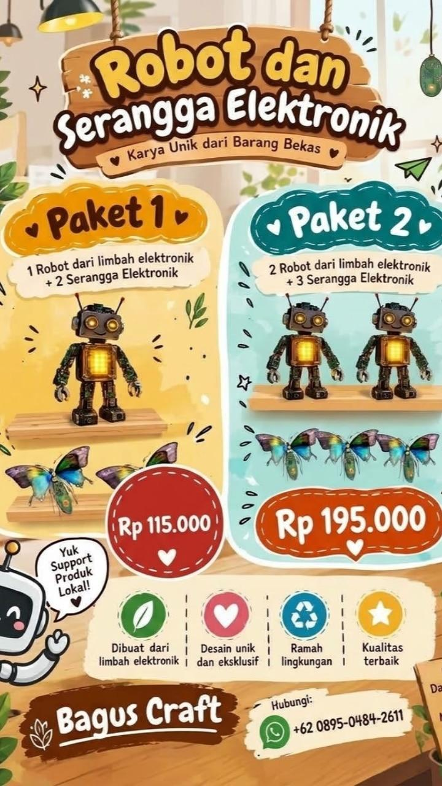
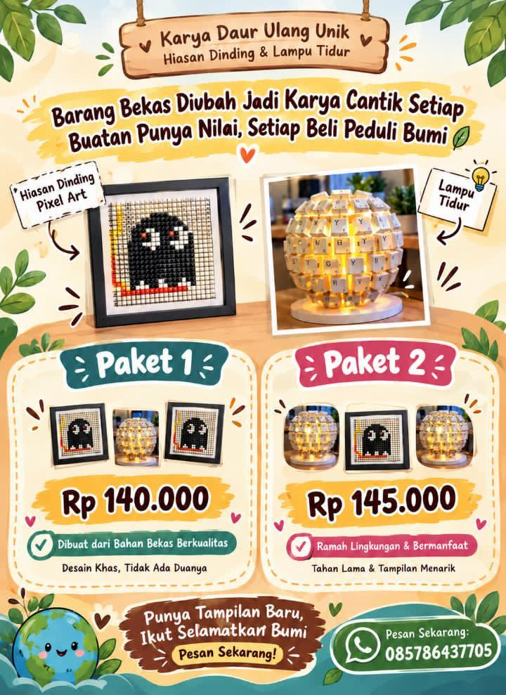
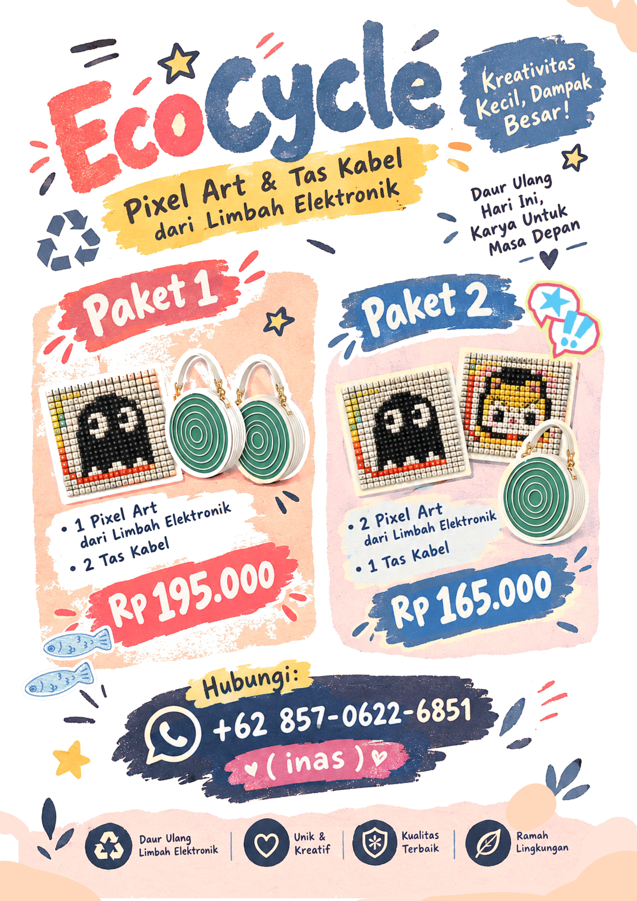
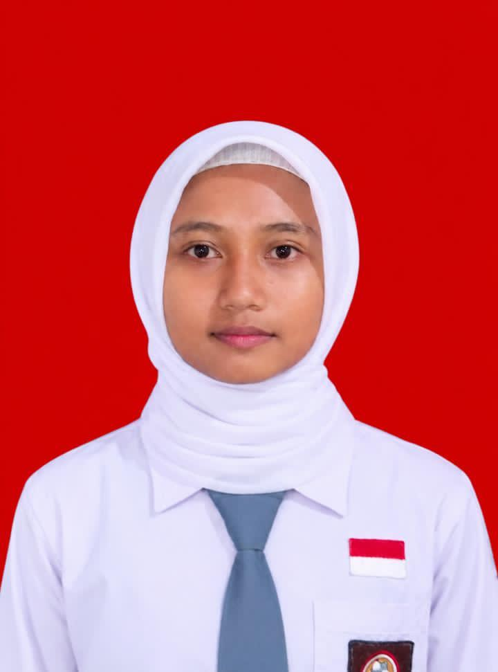
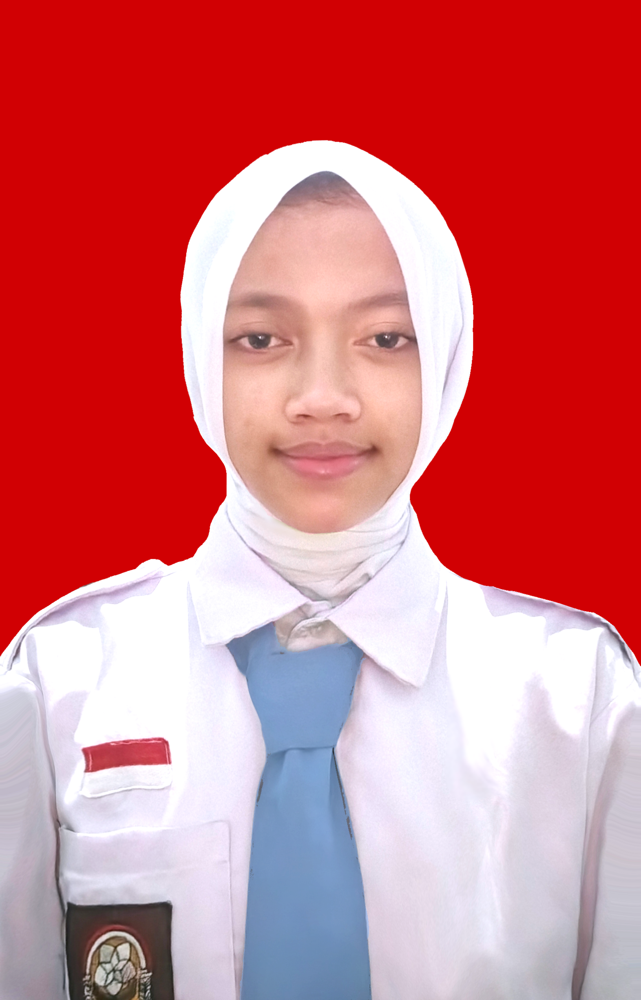

ANGGOTA 01 · BAGUS ADITYA

Robot & Electronic Insect
Perhitungan harga Robot dan seramgga elektronik.
PROJECT JOURNAL / SUBJECTS
Materi kolaborasi Matematika, Bahasa Inggris, dan IPAS.
01 / MATEMATIKA
← Kembali ke topikPenerapan Sistem Persamaan Linear Dua Variabel untuk menentukan harga satuan produk berdasarkan paket penjualan.
ANGGOTA 01 · BAGUS ADITYA

Perhitungan harga Robot dan seramgga elektronik.
ANGGOTA 02 · YULIANA FITRIANI

Perhitungan harga pixel art dan lampu keyboard.
ANGGOTA 03 · INAS D.A.P

Perhitungan harga Pixel Art dan tas kabel.
MATEMATIKA · BAGUS ADITYA
x = harga 1 robot dari e-waste
y = harga 1 serangga elektronik
Paket 1: x + 2y = 115.000
Paket 2: 2x + 3y = 195.000
Eliminasi
2x + 4y = 230.000 (x2)
2x + 3y = 195.000 (x1)
--------------------------- -
y = 35.000
Substitusi
x + 2y = 115.000
x + 2(35.000) = 115.000
x + 70.000 = 115.000
x = 115.000 - 70.000
x = 45.000
Harga 1 robot adalah Rp45.000, sedangkan harga 1 serangga elektronik adalah Rp35.000.
MATEMATIKA · YULIANA FITRIANI
x = harga 1 dekorasi dinding Pixel Art
y = harga 1 lampu tidur
Paket 1: 2x + y = 140.000
Paket 2: x + 2y = 145.000
Eliminasi
4x+2y=280.000 (x2)
x+2y=145.000 (x1)
------------------------ -
3x =135.000
x =135.000 ÷ 3
x =45.000
Subtitusi
2x+y=140.000
2(45.000)+y=140.000
90.000+y:140.000
y=140.000-90.000
y=50.000
Harga 1 dekorasi dinding Pixel Art adalah Rp45.000, sedangkan harga 1 lampu tidur adalah Rp50.000.
MATEMATIKA · INAS D.A.P
x = harga 1 Pixel Art
y = harga 1 cable bag
Paket 1: x + 2y = 195.000
Paket 2: 2x + y = 165.000
Eliminasi
2x + 4y = 390.000 (x2)
2x + y = 165.000 (x1)
--------------------------- -
3y = 225.000
y = 225.000 ÷ 3
y = 75.000
Substitusi
x + 2y = 195.000
x + 2(75.000) = 195.000
x + 150.000 = 195.000
x = 195.000 - 150.000
x = 45.000
Harga 1 Pixel Art adalah Rp45.000, sedangkan harga 1 cable bag adalah Rp75.000.
02 / BAHASA INGGRIS
← Kembali ke topikTeks laporan mengenai pemanfaatan casing PC bekas menjadi produk baru. Pilih kartu untuk membaca tulisan lengkap.

WRITTEN BY · YULIANA FITRIANI
Transforming unused materials into useful and creative handicrafts.
WRITTEN BY · BAGUS ADITYA
How an old CPU case is transformed into a storage rack.

WRITTEN BY · INAS D.A.P
How an old PC case becomes a practical stationery organizer.
BAHASA INGGRIS · YULIANA FITRIANI
Waste can cause environmental problems if it is not managed properly. However, unused materials such as old PC cases can be recycled into useful products. Instead of being thrown away, old PC cases can be transformed into creative handicrafts.
An old PC case is generally made of metal and plastic. These materials can still be used to create something useful. By reusing an old PC case, we can reduce waste and give the material a new purpose.
The process starts by collecting and cleaning the old PC case. Then, its inside is arranged into storage sections for stationery. Decorations and small yellow LED lights are added to make it more attractive. Finally, it becomes a stationery organizer for storing pencils, pens, rulers, and other school supplies.
Recycling an old PC case helps reduce waste and protect the environment. It also improves creativity, develops practical skills, and produces useful items with selling value. Therefore, recycling old materials is a creative way to create valuable products while keeping the environment clean.
BAHASA INGGRIS · BAGUS ADITYA
Electronic waste is one of the environmental problems caused by the rapid development of technology. Old CPU cases are often thrown away when computers are damaged or no longer used. However, these cases still have materials that can be reused. One creative way to reduce this waste is by transforming an old CPU case into a useful storage rack. This transformation shows how electronic waste can become a valuable and functional product.
The transformation begins when an unused CPU case is prepared and cleaned. Unnecessary components inside the case are removed carefully. The remaining metal structure is then cleaned to remove dust and dirt. After that, the case is checked to make sure it is safe and strong enough to be reused. At this stage, the original function of the CPU case changes from holding computer components into becoming a storage rack.
The cleaned CPU case is arranged and modified to create a new storage space. Additional shelves can be added using wood or other suitable materials. The shelves are attached firmly inside the case to provide space for storing books, stationery, or other small items. The outside of the case can also be painted or decorated to make it look more attractive. After the process is completed, the old CPU case becomes a useful and creative storage rack.
As a result, an old CPU case is transformed into a storage rack that has both functional and aesthetic value. The product can be used to organize various items while also serving as a unique decoration. This transformation reduces electronic waste and encourages the reuse of available materials. Therefore, recycling old computer cases into useful products is one way to support a cleaner and more sustainable environment.
BAHASA INGGRIS · INAS D.A.P
Electronic waste, or e-waste, has quietly turned into one of our biggest environmental headaches as technology moves faster than ever. We've all seen old computer hardware—like beat-up, outdated PC cases—get tossed aside like absolute trash, even though their sturdy metal frames are begging for a second life. Honestly, turning these abandoned metal shells into something practical is one of the smartest ways to tackle the waste problem. It just goes to show how old tech junk can actually become something you'd proudly keep on your desk.
Bringing this organizer to life starts with getting your workspace ready and grabbing the right tools: a small screwdriver set, large and small wire cutters, a hot glue gun or super glue, a pencil, a compass, a grinder, and a cleaning cloth or tissue. First things first, you clean out all the dust from the old PC case frame, and if you spot any rusty patches, a quick coat of white Pylox paint clears that right up. Next, take a pencil and draw the stationery organizer pattern on the PC case. Finally, cut the PC case according to the pattern you have made.
Next comes the fun part of putting it all together using reliable adhesives like super glue, hot glue, and then paint the stationary organizer with a white paint, plus add a extras like 7mm white U-edge rubber piping and warm yellow LED lights to give it a nice glow. Through a bit of careful measuring, cutting, and gluing, the bare metal frame transforms into a solid, highly functional desk organizer. Once everything is pressed firmly into place and the glue dries completely, all those loose scraps and pieces finally lock together into a single, cohesive tech-aesthetic organizer.
At the end of the day, that old, neglected PC case turns into a genuinely useful stationery organizer that looks awesome and actually serves a purpose. You end up with a handy spot to keep your workspace tidy while adding a creative piece of decor to your room. More importantly, upcycling like this keeps tons of electronic waste out of landfills and normalizes reusing materials we already have. Turning old computer scraps into everyday desk gear proves to be a super practical way to support a greener planet and keep a circular economy moving forward.
03 / IPAS
← Kembali ke topikMATERI KOLABORASI · IPAS
Lingkungan dapat mengalami pencemaran ketika zat, energi, atau komponen lain masuk ke lingkungan sehingga kualitasnya menurun. Pencemaran dapat mengganggu keseimbangan ekosistem dan kehidupan makhluk hidup.
Terjadi ketika sungai, danau, laut, atau sumber air tercemar oleh sampah, limbah rumah tangga, maupun bahan kimia. Dampaknya dapat menurunkan kualitas air dan mengganggu kehidupan organisme air.
Contoh: sampah plastik di sungai dan pembuangan limbah sembarangan ke perairan.
Terjadi ketika udara tercampur zat pencemar seperti asap, debu, dan gas dari aktivitas manusia. Kondisi ini dapat menurunkan kualitas udara dan mengganggu kesehatan.
Contoh: asap kendaraan bermotor, asap pembakaran sampah, dan emisi industri.
Terjadi ketika tanah tercampur sampah atau zat berbahaya sehingga kualitas dan kesuburannya terganggu. Pencemaran dapat memengaruhi organisme tanah dan tanaman.
Contoh: sampah plastik yang menumpuk dan pembuangan bahan kimia yang tidak tepat.
Pengolahan limbah adalah rangkaian tindakan terpadu yang mencakup pengumpulan, pemilahan, pengangkutan, pemrosesan, hingga pemanfaatan kembali material sisa atau barang yang sudah tidak digunakan agar tidak mencemari lingkungan. Tujuannya meminimalkan dampak negatif limbah terhadap kualitas air, tanah, dan udara, sekaligus mengubah sampah menjadi sumber daya sekunder yang bernilai guna.
Membatasi sampah sejak dari sumbernya. Contohnya membawa tumbler, menggunakan tas belanja kain, dan menghindari kemasan sekali pakai.
Menggunakan kembali barang tanpa perubahan bentuk yang rumit. Contohnya botol plastik sebagai pot tanaman atau kardus sebagai wadah penyimpanan.
Mengolah material sisa menjadi produk baru dengan nilai guna atau estetika berbeda. Contohnya botol plastik menjadi hiasan dinding atau batok kelapa menjadi tempat pensil.
Limbah elektronik atau e-waste adalah perangkat maupun komponen elektrik dan elektronik yang sudah rusak, usang, atau tidak digunakan lagi, seperti komputer, laptop, kabel, papan sirkuit, hingga casing PC. Beberapa komponen dapat mengandung bahan berbahaya dan logam berat sehingga memerlukan penanganan khusus dan tidak boleh dibuang sembarangan.
Material seperti casing PC, keyboard, botol plastik, kardus, dan batok kelapa masih dapat dimanfaatkan menjadi barang kerajinan yang fungsional dan estetis. Sebelum digunakan kembali, bahan perlu dibersihkan dan dipastikan aman dari bagian tajam. Komponen elektronik perlu ditangani dengan pendampingan orang dewasa.
Pembuatan kerajinan dan stationery organizer dari casing PC bekas merupakan penerapan prinsip Reuse dan Recycle. Proyek ini memanfaatkan barang yang sudah tidak digunakan menjadi produk penyimpanan dan dekorasi, sekaligus mengenalkan konsep ekonomi sirkular.
Penerapan 3R membantu mengurangi persoalan sampah. Barang bekas dapat dimanfaatkan menjadi produk kreatif, fungsional, dan bernilai ekonomis.